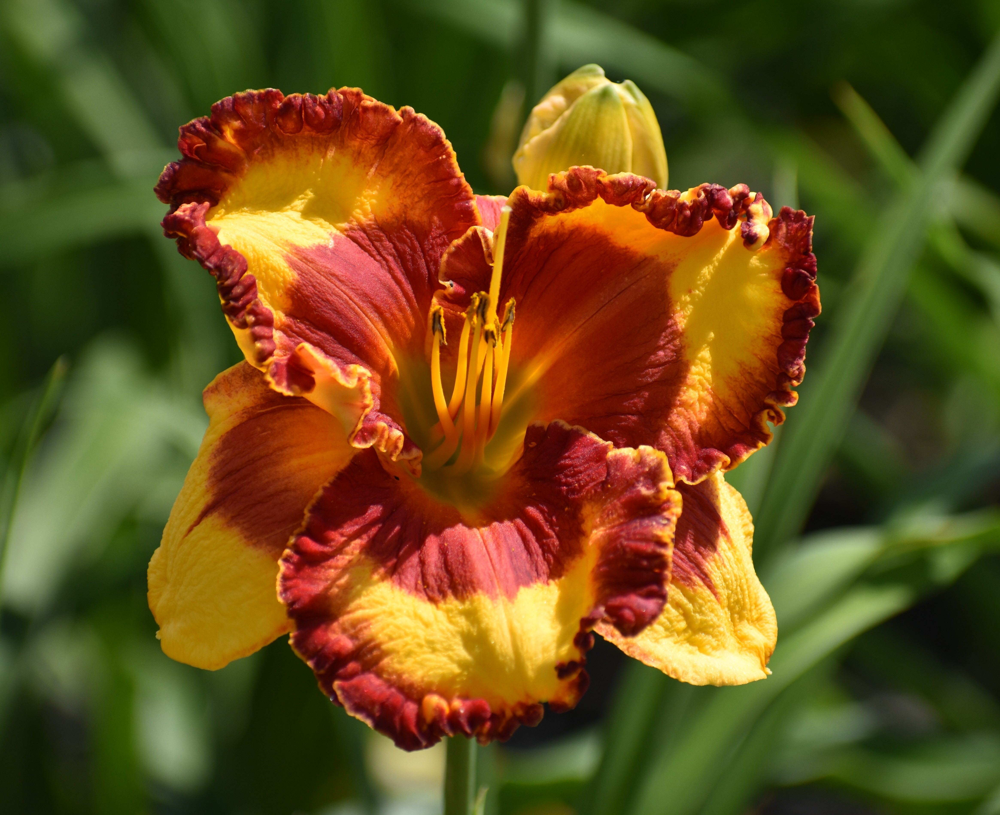
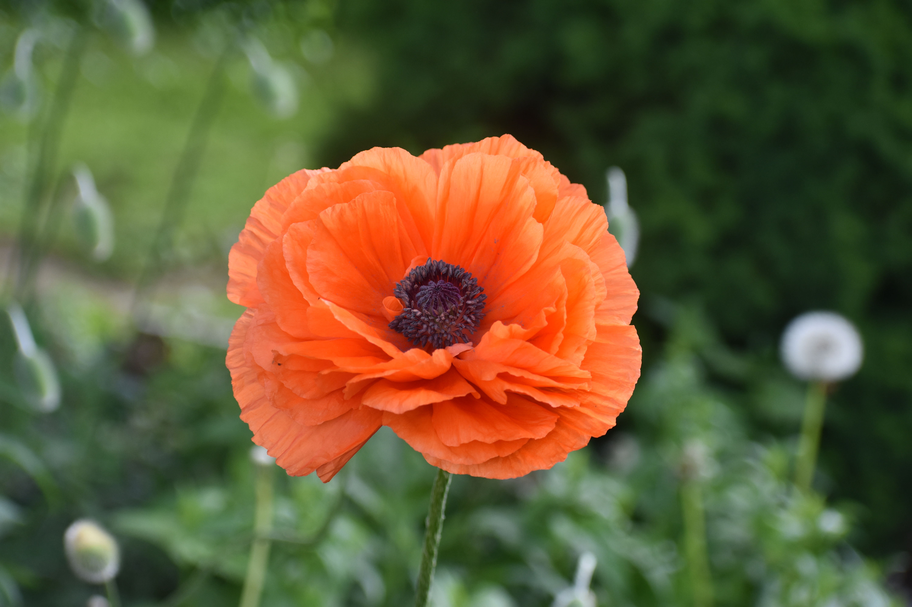

This project page is designed to give a brief introduction to Lilies in the Garden and a few of the flowers we grow. If you wish to view more of our flowers you can find us on Facebook here, or at our main website here.
Lilies in the Garden operates out of Spartansburg, Pennsylvania and sells a variety of home-grown perennials. Below are a few examples of the plants offered.
- Daylilies
- Irises
- Oriental Poppies
|  |  |
 |
|---|---|---|
"Band of Fire" daylily |
Two-toned purple bearded iris |
Orange oriental poppy |